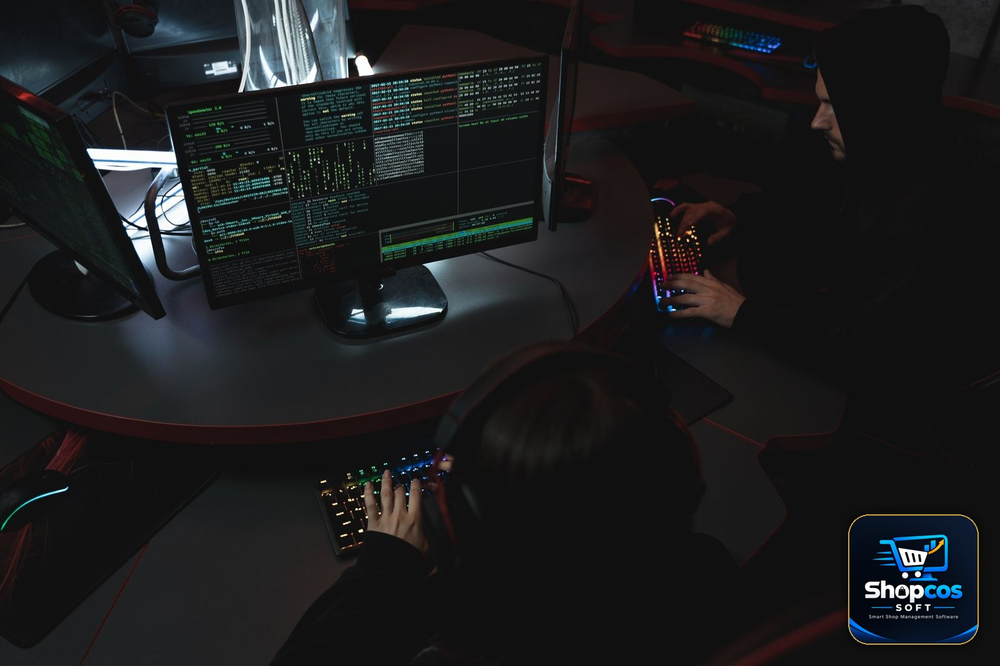

The $6.3 Billion Binance Hack: What Happened — and 7 Lessons for Small Shop Owners
Twenty minutes. That is roughly how long it took, on the evening of October 29, for hackers to move about $6.3 billion out of Binance — the world's largest crypto exchange — in what is now the largest cryptocurrency theft on record. No vault was blown open. No armored truck was stopped. The money simply walked out through the same doors Binance itself uses every day, carrying what looked like the exchange's own permission.
Your shop does not hold $6.3 billion, and nobody is suggesting a kiryana store in Samundri faces the same attackers as a global exchange. But read the details of how this happened — a trusted laptop, a system that approved whatever it was told to approve, small warning signs in the days before — and you will recognize your own counter in miniature. The failure that cost Binance billions is the same failure that costs small shops lakhs every year: records and access that nobody was watching closely enough. Here is what happened, and the seven lessons worth stealing from it.
What Happened on October 29
According to Binance and the blockchain investigators tracking the theft, the attack began at about 20:05 UTC on October 29. Over roughly the next twenty minutes, the attackers drained about $6.3 billion worth of crypto assets from Binance's hot wallets — the online wallets an exchange keeps ready for daily withdrawals. It was fast, coordinated, and, by the standards of crypto crime, enormous: larger than the $1.5 billion Bybit hack of February 2025, which had held the record until now.
The first hours were confused, as they always are. Binance initially suspected that a single compromised laptop — belonging to a DevOps engineer — was the entry point. As the investigation widened, the company found additional points of breach. The picture that emerged was more serious than one bad laptop: the attackers had abused the signing infrastructure, the internal machinery that authorizes and signs transactions before money moves. In plain words, they did not steal the keys to the vault; they found a way to make the vault's own stamp approve their paperwork. Binance has said there is no evidence that users' private keys themselves leaked.
Blockchain analytics firm TRM Labs reported that the big theft was not the beginning. In the 36 hours before the main drain, smaller amounts were taken in what investigators describe as rehearsal thefts — test runs to confirm the route worked before the attackers committed to the full amount. TRM Labs attributes the operation to TraderTraitor, North Korea's elite state hacking unit — the same group linked to the Bybit hack and, per Chainalysis, to a $387 million theft from Bitget just last month. Binance itself has not publicly confirmed who did it, and its investigation is ongoing. President Trump has said US officials are investigating the theft.
The detail that should stay with you: the attackers rehearsed. Small, easy-to-miss losses came first — then the big one. That pattern, as we will see below, is exactly how money leaks out of small shops too.
The Response: A $6.34 Billion Promise
What Binance did next is the second half of the story, and the half most worth studying. Within hours, co-CEO Richard Teng was posting updates on X, and the exchange moved to contain the damage on three fronts.
First, freezing. Working with token issuers and partners, Binance said about $3 billion of the stolen assets were frozen before they could be laundered further. Not everything stayed frozen in place — investigators noted, for example, roughly $60 million of stolen Tether swapped into Ether on the Aave platform, according to an expert quoted by USA Today — but freezing half the haul within hours limited the attackers' room to move.
Second, absorbing the loss. Binance said it had set aside more than $6.34 billion from its SAFU insurance fund and corporate treasury so that users would bear none of the loss. By the company's account, about 80 percent of the stolen token assets were already replenished — roughly $5 billion bought back across USDC, USDT, Bitcoin, Ether and BNB.
Third, proof. Binance targeted a phased restoration of withdrawals within about 34 hours and promised an updated Proof of Reserves report by Monday, November 2 — a public, checkable statement of what it holds. Founder Changpeng Zhao (CZ) commented that by dollar value this may be the largest hack ever, while noting that earlier disasters like Mt. Gox hit the industry harder in relative terms. The investigation continues, and some details will surely change as it does. But the shape of the response — freeze fast, absorb the loss yourself, and then show the records — is a masterclass in crisis handling at any scale.

Why This Belongs on a Shopkeeper's Reading List
It is tempting to file this under "crypto problems" and scroll on. Resist that. Strip away the zeros and the technology, and the Binance story has three moving parts that exist in every shop: money stored somewhere digital, people and devices trusted to touch it, and records that either prove what happened or don't. Binance's attackers won because the approval system trusted what it should have questioned. Shops lose money the same way — a cashier with too much access, a ledger nobody reconciles, a backup that was "going to be made" next week. Our guides on preventing staff theft in retail and offline vs online billing software circle the same truths from the shop side. Here they are, sharpened by a $6.3 billion example.
7 Lessons for Small Shops
1. Keep complete records — not just totals
Binance could freeze $3 billion because its records showed, transaction by transaction, exactly what left and where it went. A shop that only knows "today's sale was about forty thousand" can prove nothing and recover nothing. Keep itemized records: every bill, every udhar entry, every payment, dated and attached to a name. When a dispute or a theft comes — and one day it will — the shop with complete records is the shop that gets its money back.
2. Make backups automatic, because "later" never comes
Every post-mortem of every data disaster contains the same sentence: the backup was planned, manual, or overdue. If your sales and khata live in one notebook, one phone, or one PC with no copy anywhere else, you are one accident away from Binance-scale loss at your own scale. Set the backup once and let it run by itself — daily, without anyone remembering. (This is a design rule we follow in shopcos soft: the software takes an automatic daily backup on the shop's own machine, because a backup that depends on memory is not a backup.)
3. Keep proof you can show, not just numbers you believe
Binance's answer to panic was a Proof of Reserves report — evidence outsiders can check. Your version is smaller but identical in spirit: statements you can print or send. A customer who disputes his udhar balance settles quickly when he sees his own dated, itemized statement on WhatsApp. A partner who suspects the till settles when the day's report is complete. Proof ends arguments before they become losses.
4. Control who can touch what — the laptop lesson
The suspected entry point at Binance was one engineer's laptop: one trusted person, one trusted device, total access. In a shop, the equivalents are the cashier who can also edit rates, delete bills and clear the khata with the same login. Split the access. Cashiers bill; they should not be able to rewrite history. The owner keeps the only account that can change rates, void records, or see purchase prices. Access is not about distrust — it is about making sure no single person, password or device can quietly become the whole system.
5. Keep your money data on your own machine
Binance's billions sat in hot wallets — always online, always reachable, and therefore always attackable. Your records have a safer option that a global exchange doesn't: your own counter PC. Software that runs locally, bills offline, and keeps the database on your machine means your sales and khata are not sitting on some distant server waiting for someone else's bad day. This is precisely why shopcos soft runs its server on the shop's own computer, with the phones connecting to it inside the shop. Local-first is not old-fashioned; after this week, it looks rather wise.
6. Watch for the small leaks — they are rehearsals
Remember the 36 hours of small thefts before the big one. Shops get the same warning signs: a till that is short by small amounts on certain shifts, stock that drifts a few units at a time, one customer's khata that never quite adds up. Each looks too small to chase. Together, they are somebody testing whether anyone is watching. Reconcile the cash daily, count stock on a cycle, and treat the second small discrepancy — not the tenth — as the one you investigate.
7. Decide your bad-day plan before the bad day
Binance could promise users their money because a reserve fund existed before the crisis. Your SAFU fund is humbler: a cash buffer you do not touch, a backup you can restore from, and a written-down answer to "what do we do if the PC dies on a Saturday evening?" The shops that survive disasters are rarely the ones with the best luck; they are the ones that rehearsed. Our year-end stock audit checklist is a good place to build that habit — one full, honest count that proves your records match your shelves.
The Bottom Line
The Binance hack will be studied for years as a crime. For a small shop, it is more useful as a mirror. The attackers did not defeat mathematics; they defeated housekeeping — trusted access nobody reviewed, an approval nobody questioned, small warnings nobody connected. The defense is equally unglamorous: complete records, automatic backups, proof you can show, access split sensibly, data kept on your own machine, and a plan for the bad day. None of it costs $6.3 billion. Most of it costs only the decision to take your records as seriously as Binance now wishes it had.
Photo credits: A hand placing glowing cryptocurrency coins on a keyboard photo by Jakub Zerdzicki · Two people working at computers in a dark room photo by Tima Miroshnichenko · Two cafeteria partners using tablets at a counter photo by Tim Douglas — all via Pexels.
Your records deserve the same seriousness.
shopcos soft: Rs 40,000 one-time (lifetime license), billing, stock and digital khata in one system that runs on your own shop PC — automatic daily backups, per-cashier logins with owner-only controls, WhatsApp statements, 100% offline billing, full Urdu interface, and WhatsApp support in your language. Try it free for 30 days before you spend anything.
Start 30-day Free TrialQuestions? WhatsApp us: 0326 4025618